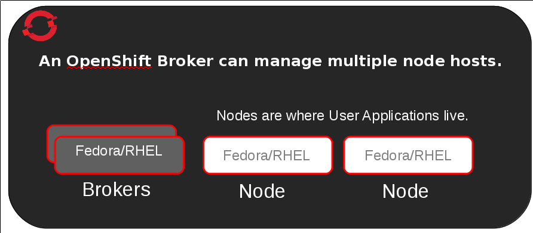
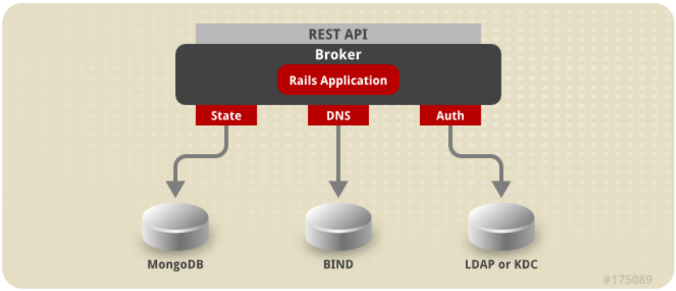
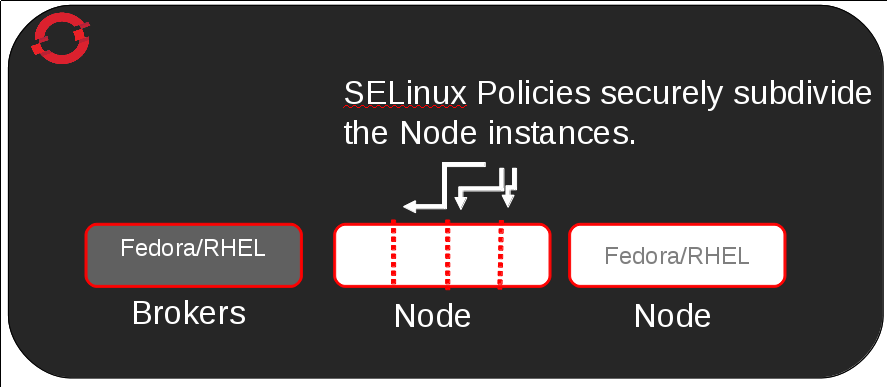
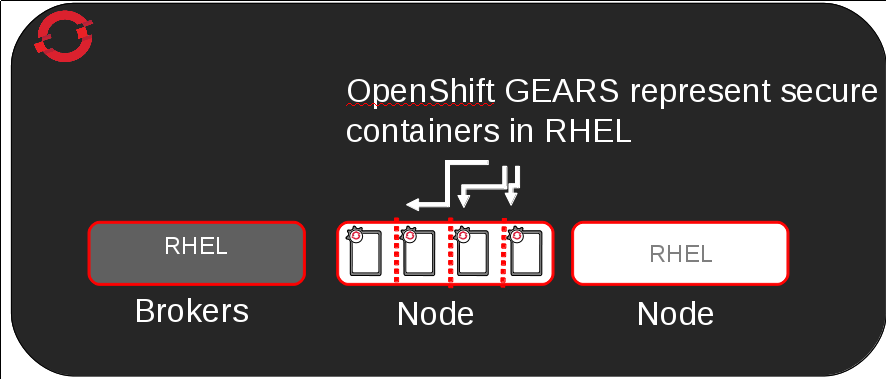
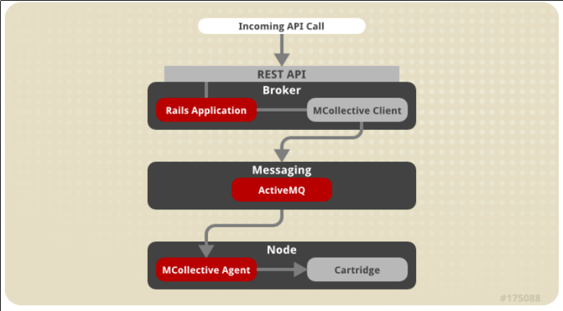
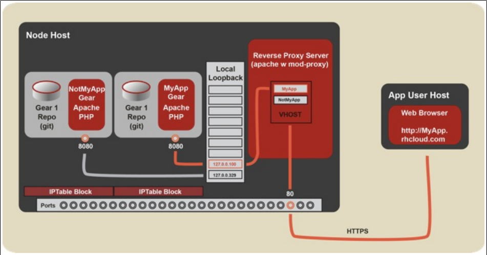
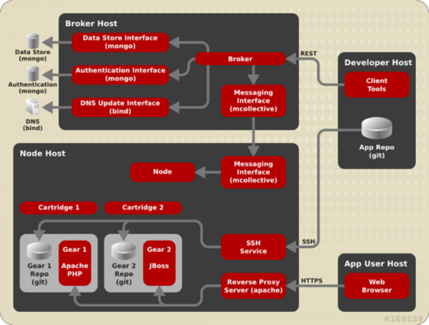

OpenShift Origin
on
Fedora linux
The Upstream of the Cloud
presented by
Open Platform Evangelist
at
Red Hat
ryanj@redhat.com
Agenda
- Cloud Overview
- OpenShift Demo
- OpenShift Internals
- Origin on Fedora
Assumptions
- You are a hard-code systems geek
- You use the command line, git, and ssh
- Manually managing large clusters is a pain
- Allowing developers to self-provision instances makes things easier for everyone
- You will ask questions
Living upstream from the cloud
making your way upstream
- Run on an upsteam OS distro (easy)
- RDO provides upstream OpenStack (IaaS)
- The next layer: OpenShift
cloud autopsy

OpenStack
- is OpenStack what developers need from a cloud product?
- What about end-users?
Upstream available via RDO
introducting OpenShift
What problems does it solve?
Let's see from a developer AND sysadmin perspective…
on linux:
- Install Apache with Mod_WSGI
- Make sure we have all the Python extensions set so Apache can see them
- Configure firewall so that only http, https, and ssh are available to outside world
- Install Postgresql, and plugins
- PG_hba.conf, create db user, create db user password, set up access privs, and test account
- Create DB, give user permissions to the DB
- Set up a git repository and then figure out how to structure and deploy
- Now I can write code - hello world, then database connection, then real app
- Get it working with a public DNS
- Now I am stuck maintaining the machine
OR
- Fill out a mile high stack of request forms for a VM from Ops and wait
- Then realize it's not configured properly, submit ticket and wait
- Repeat same information, and wait
- Your ops person moves to a different group, GOTO Line 1....
As a sysadmin
- First off, every time that developer reqests development machines, I am busy with real problems
- They always want to try some new language with some new datastore that they don't even know how to install, let alone manage
- There is whole bunch of account creation and lockdown I need to remember for each VM or they get Sudo or they annoy me all the time
- Each one of them ends up configuring their machine wildly differently
- They never give up the resources from their VMs - spreadsheets and emails
- If there is a security fix I need to go into each VM and update it
- I don't want to spend my time updating DNS tables
OpenShift provides a peaceful environment for Devs AND SysAdmins to work together in

- Operations care about stability and performance
- Developers just want environments without waiting
- And neither wants to talk to each other
Getting Started with OpenShift
pre-requisites:
ruby, rubygems
git
Sign up for OpenShift Online:
- Free-as-in-beer (no cost)
- Free-as-in-freedom (open source)
- 512 MB RAM / 1 GB storage per gear (3 free)
- Pay for more resources as you scale up
Installing the 'rhc' client tool
sudo gem install rhcConfigure your dev environment
rhc setupWill automatically:
- set your openshift email address
- verify your ssh key configuration
- configure your application namespace
Demo time
Gearing up a new app on OpenShift
rhc app create APP_NAME APP_CARTRIDGE APP_CART_2 APP_CART_3or
rhc app create instantappstore nodejs-0.6 mongodb-2.2 --from-code=https://github.com/openshift-quickstart/openshift-meteorjs-quickstart.gitApplication Options
-------------------
Namespace: rjdemo
Cartridges: nodejs-0.6, mongodb-2.2
Source Code:
https://github.com/openshift-quickstart/openshift-meteorjs-quickstart.git
Gear Size: default
Scaling: no
Creating application 'instantappstore' ... done
Waiting for your DNS name to be available ... done
Downloading the application Git repository ...
Cloning into 'instantappstore'...
Your application code is now in 'instantappstore'instantappstore @ http://intstantappstore-rjdemo.rhcloud.com/ (uuid: 5175981a5973ca7a69000501)
-------------------------------------------------------------
Created: 1:05 PM
Gears: 1 (defaults to small)
Git URL:
ssh://5175981a5973ca7a69000501@instantappstore-rjdemo.rhcloud.com/~/git/instantappstore.git/
Initial Git URL:
https://github.com/openshift-quickstart/openshift-meteorjs-quickstart.git
SSH: 5175981a5973ca7a69000501@instantappstore-rjdemo.rhcloud.com
nodejs-0.6 (Node.js 0.6)
------------------------
Gears: Located with mongodb-2.2
mongodb-2.2 (MongoDB NoSQL Database 2.2)
----------------------------------------
Gears: Located with nodejs-0.6
Connection URL:
mongodb://$OPENSHIFT_MONGODB_DB_HOST:$OPENSHIFT_MONGODB_DB_PORT/
Database Name: instantappstore
Password: PTk4cCetTj2w
Username: admin
RESULT:
Application instantappstore was created.Success!
You should now have MongoDB and a basic node.js app running on OpenShift!
Your gear is now configured with:
- it's own git repo
- it's own web server
- ssh access
- logging
- MongoDB
- publicly accessible DNS
Add MongoDB to an existing app
rhc cartridge add mongodb-2.2RockMongo on Openshift
rhc cartridge add rockmongo-1.1(optional)
Environment Variables
if(process.env.OPENSHIFT_MONGODB_DB_PASSWORD){
connection_string = process.env.OPENSHIFT_MONGODB_DB_USERNAME + ":" +
process.env.OPENSHIFT_MONGODB_DB_PASSWORD + "@" +
process.env.OPENSHIFT_MONGODB_DB_HOST + ':' +
process.env.OPENSHIFT_MONGODB_DB_PORT + '/' +
process.env.OPENSHIFT_APP_NAME;
}else{
connection_string = db_name;
}But how does it work?
On to Construction
Terminology
- Broker – Management host, orchestration of Nodes
- Node – Compute host containing Gears
- Gear – Allocation of fixed memory, compute, and storage resources for running applications
- Cartridge – A technology/framework (PHP, Perl, Java/JEE, Ruby, Python, MySQL, etc.) to build applications
Server Types
The Broker is responsible for state, DNS, and authentication.
Now configure an application on a Node
What is a gear
Secure and Efficient

What is a cartridge

Flow of request
Multi-tenant networking
Whole Stack

Buzz Words
Public Cloud + Private Cloud =
Hybrid Cloud
The Source lives Upstream

Livin' on the Edge
Upstream
Open client interface
Open cartridge format

OpenShift Origin
Where to get the code++
- Code is available at http://openshift.github.io
- Current work and roadmap is on Trello https://trello.com/openshift
- A whole bunch of slide decks are up on slideshare
Installation on Fedora
VMs available
Installing in "the cloud"
Would love to see us on the fedora cloud images page eventually
Soon: look for OpenShift images via RDO / OpenStack management tools
Let's talk about community
- Friday G+ hangouts
- Community Days
- Engineers in the IRC channel
- Many ways for you to be invloved
How about our commitment to FOSS
- Meritocracy for our pull requests
- Everything from core, quickstarts, and cartridges, to small typo fixes in the command line tools
- Public Trello cards
- Public Test plans
- Voting on Features
- Public Bugzilla
- getupcloud.com is using Origin to offer a competitive service in Latin America - they presented at RH Summit
Let's wrap it up
- Openshift makes work fun
- Free and in Beer and as in Apache Freedom
- We LOVE pull requests http://openshift.github.io
Come hang out with us:
#openshift-dev on freenode irc
OR
dev@lists.openshift.redhat.com
See you on the upstream side of the Cloud
Thanks for following along! --ryanj